Badlands National Park Travel Guide
242,756 acres of sharply eroded buttes and pinnacles, along with the largest undisturbed mixed grass prairie in the United States
General Information
Ben Reifel Visitor Center
Winter Hours November 1 to March 30
9am to 4pm
Spring Hours
April 1 to Memorial Day
8am to 5pm
Summer Season Only May to September
7am to 7pm
White River Visitor Center
8am to 5pm
Accepts America The Beautiful Pass
From Rapid City (62 mi): Head north on Mt Rushmore Rd toward St Joseph St. Use the left 2 lanes to turn left onto Omaha St. Turn right at the 1st cross street onto I-190 N. Keep right at the fork to continue on Exit 1B, follow signs for I-90 E/Sioux Falls and merge onto I-90 E. Take exit 110 for SD-240/Glenn St toward Badlands Loop/Scenic Byway. Turn right onto SD-240 E.
Overview
Badlands National Park in southwestern South Dakota protects 242,756 acres of sharply eroded buttes, pinnacles, and spires alongside the largest protected mixed-grass prairie in the United States. Layers of colorful sediment, deposited over millions of years, are slowly washed away by wind and rain, exposing one of the world's richest fossil beds, with the remains of ancient rhinoceroses, saber-toothed cats, and the three-toed horse. The striking striped formations and sweeping prairie are home to bison, bighorn sheep, and prairie dogs, and the park is one of the most scenic stops on a South Dakota road trip.
The area was set aside as a national monument in 1939 and redesignated a national park in 1978. The South Unit, or Stronghold District, is co-managed with the Oglala Lakota tribe and is a sacred site tied to the Ghost Dance. People visit for the scenic loop drive, short hikes with huge views, the fossils, the wildlife, the sunrise and sunset light on the formations, and the dark night skies. The park is also close to Wall Drug, Mount Rushmore, and the Black Hills.
Park Sections
The park has three main areas. The North Unit is the most visited and has the Badlands Loop Road (Highway 240), the Ben Reifel Visitor Center, Cedar Pass Lodge, and most trails and overlooks. The Sage Creek area to the west is a wilderness area reached by the gravel Sage Creek Rim Road, where bison and prairie dogs live and where dispersed camping is allowed. The South Unit, or Stronghold District, is remote, on the Pine Ridge Reservation, reached by unpaved roads and requiring more planning. The North Unit can be entered from I-90 at exit 131 near Wall or exit 110 near Cactus Flat.
Sightseeing and Exploring the Park
The Badlands Loop Road is a 39-mile paved scenic drive running between Wall and Interior, with about a dozen overlooks, including Big Badlands Overlook, Pinnacles Overlook, Yellow Mounds Overlook, Panorama Point, and Seabed Jungle Overlook. Each offers a different view of the layered formations, and many are within a short walk of the parking lot. On the Sage Creek Rim Road, Dillon Pass and Hay Butte Overlook look over the prairie and the wilderness, and Roberts Prairie Dog Town is a good place to see prairie dogs. Sunrise and sunset are the best times for photography.
Hiking
The park's best-known trails are short. The Window Trail (0.3 miles) and Door Trail (0.8 miles) start from the same parking lot and offer views into canyon formations; the Fossil Exhibit Trail (0.25 miles) is an accessible boardwalk, and the Cliff Shelf Nature Trail (0.5 miles) passes a juniper forest. The Notch Trail (1.5 miles round trip) includes a log ladder and a ledge with an exposed view over the White River Valley, and it is the most popular of the moderate hikes. The Castle Trail (10 miles round trip) is the longest, running through prairie and formations. Hikers can also walk off-trail in many areas. There is little shade or water, so carry plenty and watch for rattlesnakes.
Other Activities
The park is known for fossils, and rangers lead fossil talks and a fossil preparation lab can be seen at the Ben Reifel Visitor Center. Other activities include ranger-led night sky programs, stargazing, backcountry camping, photography, and bicycling on the roads. There are no commercial outfitters or cave tours, but many attractions are close by, including Wall Drug, Minuteman Missile National Historic Site, and the Black Hills' Mount Rushmore and Wind Cave National Park, each within about 1.5 hours.
Flora and Wildlife
The park's prairie has more than 400 plant species, including western wheatgrass, buffalo grass, and sage, along with yucca, prickly pear cactus, and wildflowers in spring and early summer. Wildlife is easy to see: bison roam the Sage Creek area, bighorn sheep are often seen near the Pinnacles and Big Badlands Overlook, and prairie dogs, pronghorn, mule deer, coyotes, and burrowing owls live in the grasslands. The endangered black-footed ferret has been reintroduced in the park. Keep a safe distance from wildlife; prairie rattlesnakes are also common. Viewing is on your own.
Access
The North Unit is easily reached from I-90 in western South Dakota, with the entrance at Cactus Flat about 8 miles south of the town of Wall and the Ben Reifel Visitor Center at Cedar Pass. Rapid City is about 75 miles west, around 1.25 hours, and has the nearest commercial airport. Sioux Falls is about 4 hours east, and Pierre about 2 hours. Visitors arrive by car, and there is no public transportation. Cell service is spotty in parts of the park, and services are limited, so bring water and fill up on gas in Wall or Interior.
Seasons
Summer is the busiest and hottest season, with temperatures often in the 90s and sometimes above 100 °F, and severe thunderstorms and hail are possible. Spring and fall are the best times, with mild weather, wildflowers in spring, and fewer crowds. Winter is cold and windy, with snow, but the Loop Road is usually open and the formations look striking with a dusting of snow. The gravel Sage Creek Rim Road becomes slippery or impassable after rain or snow, and some facilities close in winter. Clay in the formations is slippery when wet.
Camping and Lodging
The park has two campgrounds. Cedar Pass Campground, near the visitor center, has more than 90 sites with reservations, and Sage Creek Campground is a free, primitive, first-come campground in the wilderness area. Backcountry camping is allowed away from roads. Cedar Pass Lodge, at the visitor center, offers cabins and a restaurant, usually from spring to fall. Wall, about 8 miles from the northeast entrance, has many motels, including the Best Western Plus Plains Motel and Frontier Cabins, and Interior has a few cabins. Rapid City, about 75 miles west, has the widest choice of hotels, and the Black Hills are about 1.5 hours away.
Visitor Centers
The Ben Reifel Visitor Center at Cedar Pass is the park's main visitor center. It has exhibits on the fossils, geology, and Lakota history, a film, a bookstore, and a fossil preparation lab where you can watch scientists work. The White River Visitor Center in the South Unit is smaller and open seasonally, with exhibits on Lakota history and the Stronghold District. Hours vary by season, so check the National Park Service website.
Top Trails
Window Trail
Length: Approximately 0.3 miles round trip
Elevation Gain: Minimal
Difficulty: Easy
This short and accessible boardwalk trail leads to a natural "window" in the Badlands wall where visitors can enjoy panoramic views of the colorful canyon formations beyond. It is one of the park's most popular walks and is suitable for visitors of all ages.
Door Trail
Length: Approximately 0.8 miles round trip
Elevation Gain: Minimal
Difficulty: Easy
The Door Trail begins on a boardwalk before passing through a break, or "door," in the Badlands wall. Visitors can follow marked posts across an open landscape of eroded formations while enjoying expansive views of the rugged terrain.
Notch Trail
Length: Approximately 1.5 miles round trip
Elevation Gain: Approximately 130 feet
Difficulty: Moderate to Strenuous
One of the park's most famous hikes, the Notch Trail features a wooden ladder, canyon crossings, and cliff-edge sections that lead to a dramatic overlook. The trail rewards hikers with one of the most spectacular views in Badlands National Park.
Cliff Shelf Nature Trail
Length: Approximately 0.5 miles loop
Elevation Gain: Minimal to Moderate
Difficulty: Easy
This short trail traverses a unique juniper forest perched on the Badlands cliffs. Boardwalks, steps, and interpretive signs guide visitors through an area that contrasts sharply with the surrounding rock formations while offering scenic viewpoints.
Fossil Exhibit Trail
Length: Approximately 0.25 miles loop
Elevation Gain: Minimal
Difficulty: Easy
The Fossil Exhibit Trail is a fully accessible boardwalk featuring interpretive displays that explain the park's remarkable fossil resources and prehistoric ecosystems. It provides an excellent introduction to the ancient animals that lived in the region millions of years ago.
Sources: National Park Service official Badlands National Park trail information, including details on the Window Trail, Door Trail, Notch Trail, Cliff Shelf Nature Trail, Fossil Exhibit Trail, trail distances, accessibility information, and hiking recommendations. https://www.nps.gov/badl/planyourvisit/hiking.htmhttps://www.nps.gov/badl/planyourvisit/hiking.htm
Additional information verified through National Park Service Badlands National Park visitor resources covering scenic drives, wildlife viewing, fossil resources, geology, overlooks, photography opportunities, and recreational activities throughout the park. https://www.nps.gov/badl/index.htmhttps://www.nps.gov/badl/index.htm
This article uses material from the Wikipedia article "Badlands National Park", which is released under the Creative Commons Attribution-Share-Alike License 3.0. Additional information comes from the National Park Service Badlands National Park website.
This article uses material from nps.gov "Badlands National Park"
Featured Trails
Pinnacles Overlook
Dramatic layered rock formations, expansive prairie views, and frequent wildlife sightings combine to create one of the most sweeping scenic viewpoints in the national park.
Sage Creek Rim Road
High prairie grasslands, rugged Badlands formations, and broad panoramic views of remote wilderness landscapes define this elevated mountain pass along the park’s scenic backcountry route.
Sage Creek Rim Road, Badlands National Park
Provides access to several overlooks and the Sage Creek Campground, as well as opportunities for backcountry access and wildlife viewing
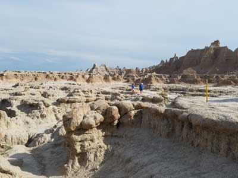
Door Trail
0.75 miles roundtripAn accessible ¼ mile boardwalk leads through a break in the Badlands Wall known as "the Door" and to a view of the Badlands. From there, the maintained trail ends. Travel beyond this point is at your own risk
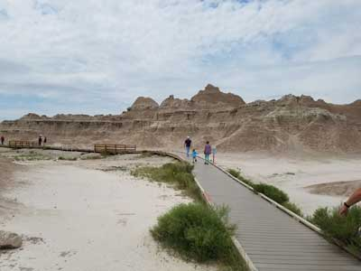
Window Trail
0.25 miles roundtripThis short trail leads to a natural window in the Badlands Wall with a view of an intricately eroded canyon.
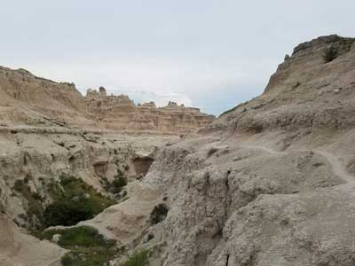
Notch Trail
1.5 miles roundtripModerate to strenuous. After meandering through a canyon, this trail climbs a log ladder and follows a ledge to "the Notch" for a dramatic view of the White River Valley. Trail begins at the south end of the Door and Window parking area.
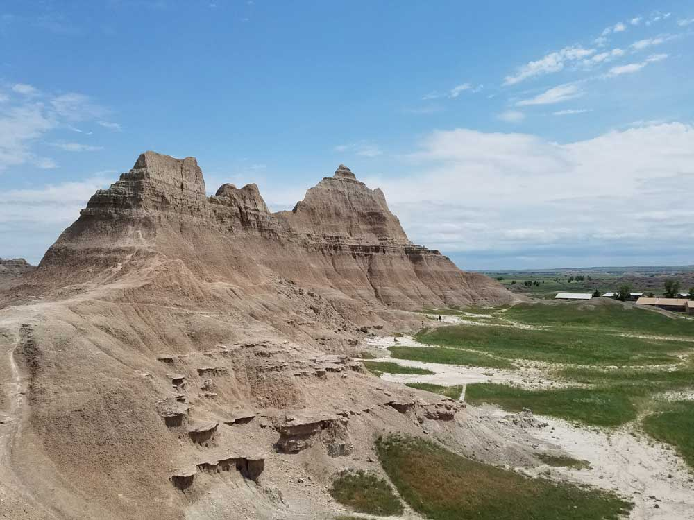
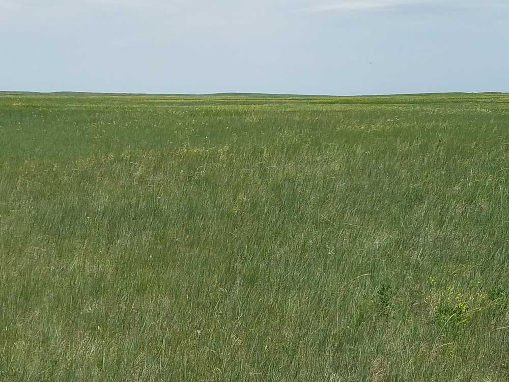
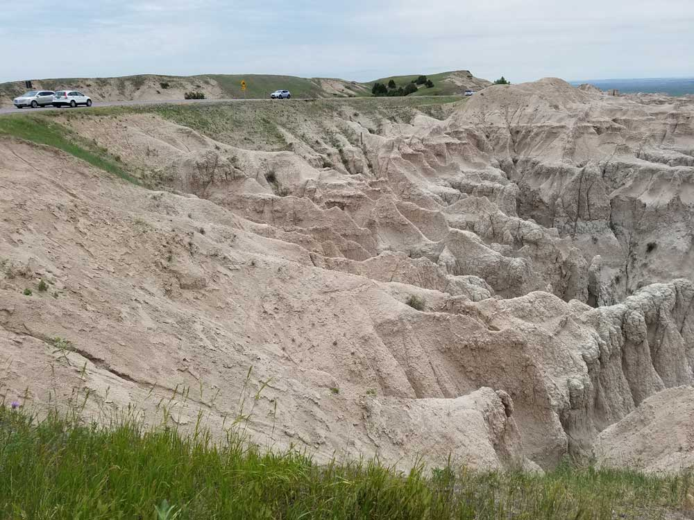
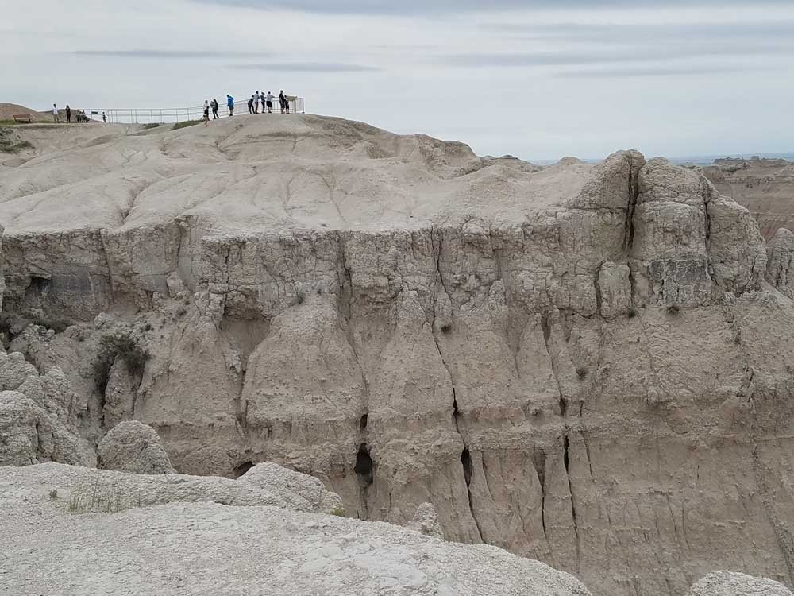
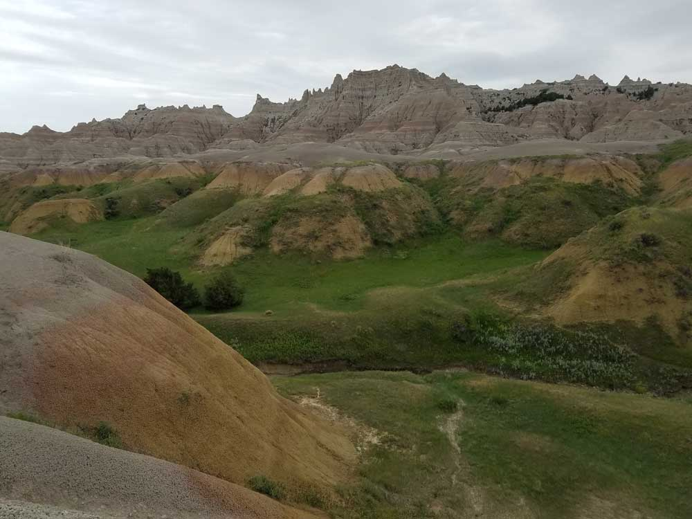
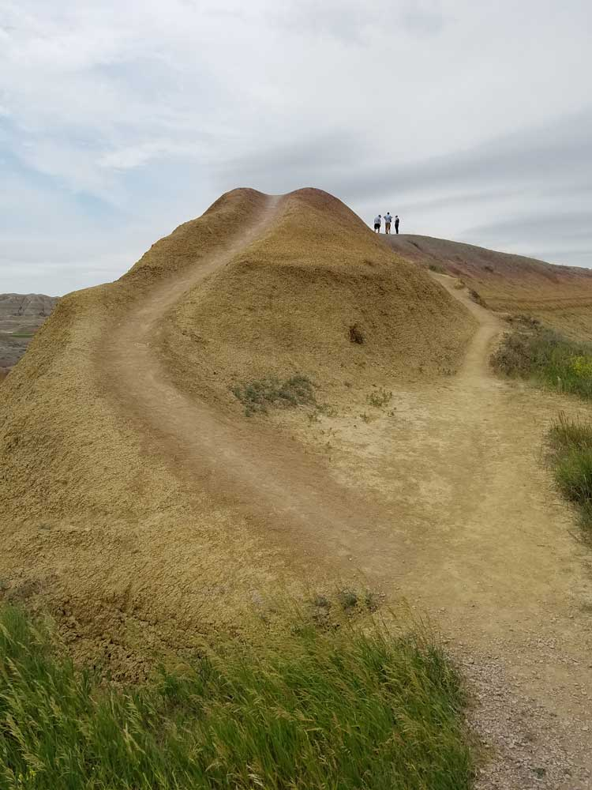
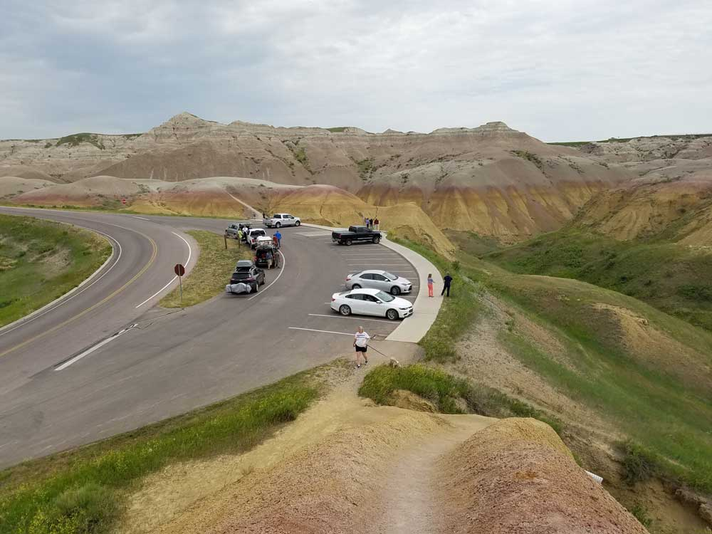
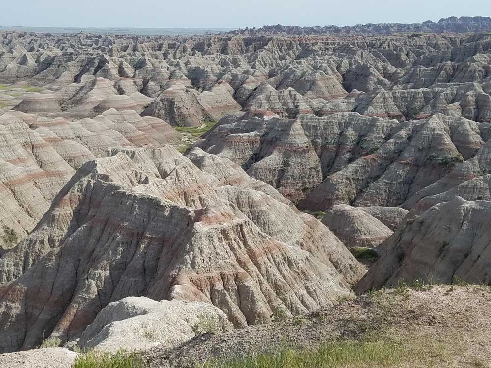